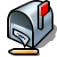

| Índice |
|
Creating a new e-mail account Account settings Setting up incoming e-mail Setting up outgoing e-mail Notifications and e-mail filters Setting up the Mail Service |
E-mail
| Deskbar: | ||
| Localização: | /boot/system/preferences/E-mail | |
| Definições: | ~/config/settings/Mail/* |
Haiku provides a system that retrieves e-mail regularly via a Mail Service (also known as mail_daemon) and saves each mail as a single text file. It parses the mail and fills its attributes with all necessary header information, like from, to, subject and its unread status. Now it can be queried by you or any application. This system also makes switching e-mail clients easy as all the data and your configuration stays the same.
The configuration is done in the E-Mail preference panel.
 Creating a new e-mail account
Creating a new e-mail account
Let's go through the process of setting up an e-mail account.
You start by clicking the button to create a new, unnamed account. This opens a panel where you fill in your account info:

First, you set how you get your mail, via or .
Now you enter your E-mail address, Login name and Password, give an Account name under which it will be known under Haiku and your Real name.
If your account is from a major e-mail provider, Haiku already knows all technical details like server IP addresses. If that is not the case, clicking will open another window to enter this information by hand:

You first set the Server name, Login type and Connection type for the incoming mail, below that for the outgoing mail. You should find the necessary information on your email provider's website.
See below for more info about the various settings and additional options.
Account settings
By selecting the name of an account in the left list, you can change some general settings:

The Account name is the name that's shown for example in the list of accounts in the E-mail preferences. Real name is the name someone sees when she gets mail from you. Return address is the email address that is used when someone replies to your mail. Normally that is the same address you've sent your email from.
If you'd like to use an email account to only send or only receive email, you can de/activate that usage by right-clicking the account's name in the leftside list to set the checkmarks accordingly.
More on setting up incoming e-mail
Click on under your account's name to set up how e-mails are received.

First is the address for incoming mails. If your provider needs you to log into a specific port, you add that to the address, separated by a colon. For example, pop.your-provider.org:1400.
Then you enter your login information, Login name and Password, and if necessary change the Login type from the default to for authentication.
If you use POP3 and retrieve mails of this account from different computers, you may want to activate the option to and only locally.
If you use IMAP instead, you have the option to locally. You can specify to only synchronize with a specific folder and its subfolders.
Also, you can opt to only a certain size. This will only get the header and you can decide if you want to download the rest of the message plus possible attachments after seeing the subject and who sent it. Useful if you have a slow connection.
You can change the Destination of your inbox (default: /boot/home/mail/in/), which is useful if you'd like to separate the mails from different accounts into their own folders. However, queries let you sort things out just as well.
More on setting up outgoing e-mail
Click on under your account's name to set up how e-mails are sent.

First is the SMTP server address for outgoing mails. As with the incoming server before, you can use a specific port if needed, e.g. mail.your-provider.org:1200.
If you need to login, you change the Login Type to and enter username and password above. The other type is used for providers that need you to check for mail with for identification.
As with incoming mail, you can also change the Destination of your outbox (default: /boot/home/mail/out/).
Notifications and other e-mail filters
Notifications for newly arrived email and methods to sort and filter emails are found in under an account's name. You can add any number of filters that are applied one after the other and rearrange them by drag & dropping them to their new position.
Currently there are three you can add. After adding a filter, you have to select it to see its options.
Spam filter (AGMS Bayesian)

The spam filter uses statistical methods to classify a mail as unwanted spam. It assigns a value between 0 and 1 to it and you can decide what are the limits for a genuine mail and what will be considered spam.
You can have that spam rating added to the start of the subject.
Also, the spam filter can learn from all incoming e-mail. Of course, you'll have to teach it by sorting out the false positives, mails that were mistakenly marked as spam. You'll find more on that when we discuss the application Mail.
Together with the following , you're able to automatically sort out detected spam mails.
Rule filter

This filter compares the mail header to a search pattern and performs some action according to the rules you set up.
With the first text field you specify which header to check against. These are available:
| the name of the sender | ||
| the e-mail address of the sender | ||
| your e-mail address (different for each e-mail account) | ||
| the e-mail address replies are sent to | ||
| the date and time the mail was received | ||
| the subject line | ||
| addresses of anyone receiving a carbon copy (Cc) | ||
| the name of the e-mail's account | ||
| The current status of the e-mail. Normally, this can be "Read", "Replied", "Sent", "Forwarded", "New", or anything you have defined yourself. However, unless you change it yourself in a filter, it will always be "New" after the Mail Service fetched the mail. | ||
| is set by the sender's e-mail program (e.g. "urgent") | ||
| essentially the same as "Subject", but without things like Re: or Fwd: | ||
| depending on what the spam filter classified it as, this will either be empty (if uncertain) or contain the word "Genuine" or "Spam" | ||
| this is a numerical estimate that the spam filter assigned to the e-mail. They are shown in scientific notation, where 1.065e-12 translates to 1.065 divided by 10 to the 12th power, which in this case translates to 0.000000000001065. |
The second text field holds your search pattern. It accepts regular expressions which gives it great flexibility, while unfortunately complicating things a bit. Read up on it a bit, it's well worth it and simple search patterns aren't that complicated at all.
With the pop-up menu below it, you assign an action when the pattern matches. You can move or delete a mail, set the status to "Read" or anything else or set the e-mail account you'll reply with.
New mails notification

There are several ways you can choose to be notified of newly arrived email. Under you find a number of options that can be combined as well:
| No notification | ||
| Plays the sound file of the "New E-mail" event set in the Sounds preferences for every new email | ||
| Shows an alert window for every new email | ||
| Blinks some LEDs like the caps-lock indicator | ||
| Shows one alert window for all new mails | ||
| Plays the sound file of the "New E-mail" event set in the Sounds preferences once for new mail | ||
| Shows the log window |
Outgoing Mail Filters
At this moment, there's only one filter that deals with outgoing mail: fortune.
It will attach a randomly chosen funny or wise "fortune cookie" to the end of every mail before it's sent out. You can do a dry run by issuing the command fortune in a Terminal.
Setting up the Mail Service
Now that your incoming and outgoing mail servers (and maybe some filters, too), are configured, you have to tell the Mail Service that does all the actual checking and fetching how to do its job.

Under Mail checking you configure the interval at which the account's mail server is probed for new mail.
If you're on a dial-up connection, you may want to do that and also to avoid dialing automatically in regularly only to check for mail.
The Mail Service has a status window which you can set to show up , , or .
Make sure to or there will be no mail_daemon running to do your bidding...

will open the folder /boot/home/config/Mail/Menu Links/. All folders or queries (!) or their links put into this folder will appear in the context menu of the mailbox icon of the Mail Services in the Deskbar tray.
From that menu, you can also , or edit .
If you hold down SHIFT when invoking the context menu, you'll get additional commands:
| Offers a submenu to check only one specific account | ||
| Allows you to send pending mails without also checking for new mails | ||
| Quits the whole email infrastructure (mail_daemon) |
The mailbox icon itself shows if there are unread messages (status "New") when there are envelopes inside.